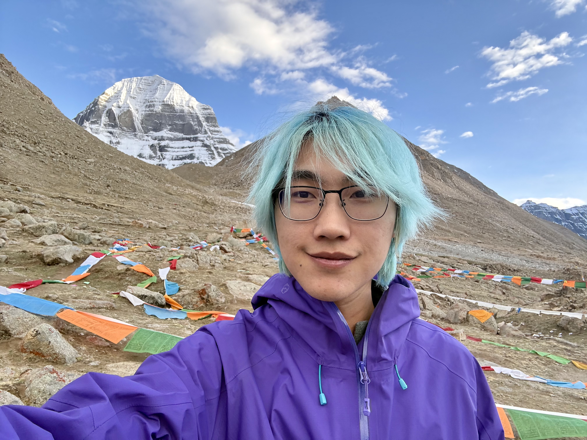
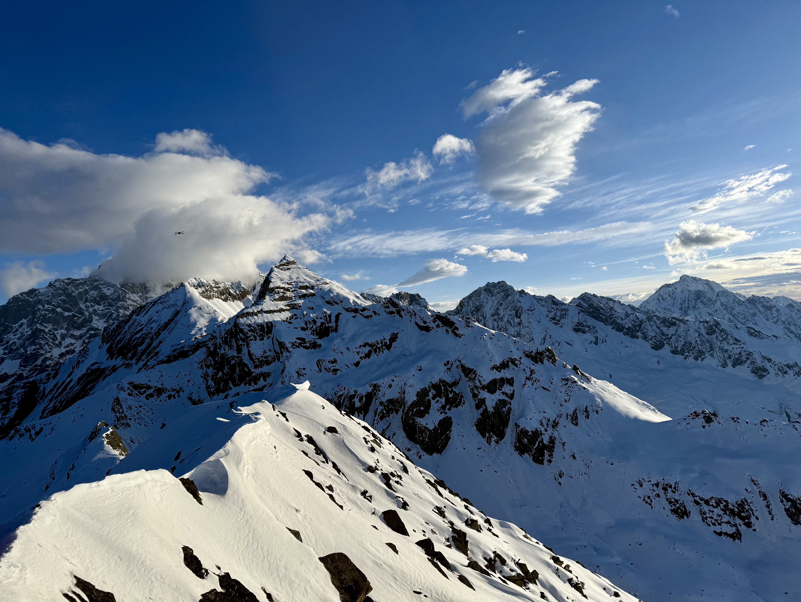
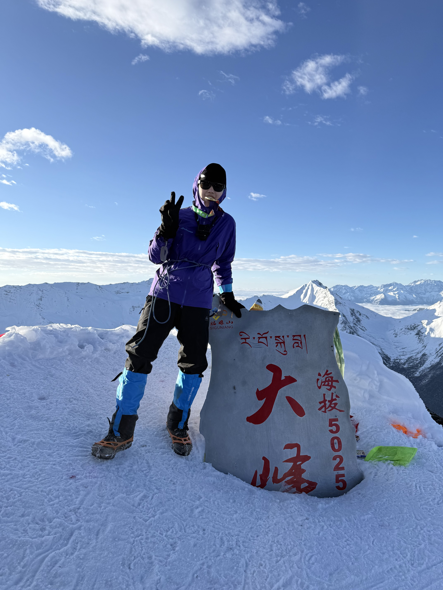

Seven Summits. Two Poles. One lifelong adventure.
Beyond research, I am passionate about mountaineering and adventure. One of my long-term goals is to complete the 7+2 Challenge, also known as the Explorers Grand Slam: climbing the highest peak on each of the seven continents and reaching both the North and South Poles. For me, it is a journey of endurance, curiosity, and exploring the limits of both the world and myself.
Into the mountains and toward the unknown.
This is a collection of journeys into the high mountains, along winding trails, across remote valleys, and toward the unknown. There is always another road to follow and another story waiting beyond the next ridge.
A high-altitude journey around Mount Kailash, following the pilgrimage route through the remote landscape of western Tibet.

A spring journey into the mountains of western Sichuan, surrounded by snow-covered peaks and high alpine valleys.

